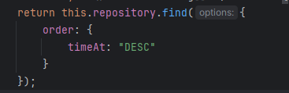

Đây là thẻ văn bản: p
Prose is the form of written language that follows the natural flow of speech, a language's ordinary grammatical structures, or typical writing conventions and formatting. It differs from traditional poetry, where the format consists of verse: writing in lines that follow rhythmic metre or a rhyme scheme. Wikipedia
 Đăng nhập facebook đi em ơi